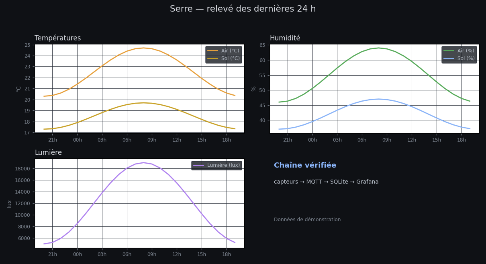

Projets
La serre
Le déploiement réel, en cours : télémétrie prête, matériel attendu.
Prix Sur devis
À venir

Dans ce projet
Preuve — La serre
L'état réel des bus et de la base, au moment de la construction.
Où j’en suis
Je préfère le dire plutôt que de faire semblant : les bus sont activés et aucun capteur n’est branché. La télémétrie — MQTT, SQLite, Grafana — est prête et testée sur des données de démonstration. Le matériel arrive.
Ce qui est déjà fait
- les bus I2C, SPI et 1-Wire activés dans
config.txt, et un redémarrage pour le prouver ; - la chaîne complète testée de bout en bout : publication, collecteur, base, tableau de bord ;
- la décision d’arrosage écrite, testée, et expliquée dans le kit ;
- le câblage, la liste de pièces et l’ordre de mise en service.
Ce qui manque
Des capteurs (SHT31, BH1750, ADS1115, DS18B20), une pompe, et un débitmètre. C’est du matériel, pas du code : il faut le commander.
Quand un capteur répondra pour la première fois, la page de preuve de ce projet montrera le relevé réel au lieu de la base de démonstration. Elle est conçue pour ça.